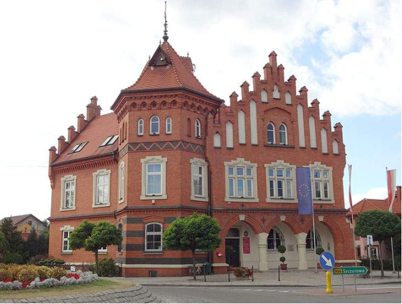
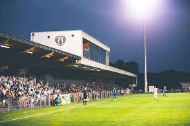

Historia
Nazwa miasta Niepołomice pochodzi od pierwotnej osady związanej z puszczą, która była porośnięta "niepołomami"
, czyli drzewami trudnymi do złamania. Kroniki polskie, takie jak Jan Długosz czy Bartosz Paprocki, zapiski archiwalne i rachunki dworu królewskiego
mówią o bogatej przeszłości Niepołomic.
Chociaż historia miasta sięga XIII wieku, najstarsze zabytki datowane są na połowę XIV wieku i związane są z panowaniem Kazimierza Wielkiego.
Na jego polecenie zbudowano zamek myśliwski oraz kościół pod wezwaniem Dziesięciu Tysięcy Męczenników.Pierwszy dokument królewski w Niepołomicach pochodzi z 1349 roku.
Pierwotnie zamek służył jako punkt obrony przed najazdami ze
wschodu oraz strzegł brodu na rzece Wiśle, a dopiero za panowania Władysława Jagiełły stał się rezydencją myśliwską.
Położenie
Ciekawostki
1)Niepołomice podzielone są na 7 osiedli. Są to: Boryczów, Jazy, Podgrabia, Piaski, Śródmieście, Centrum, Zagrody i Zakościele.
2)Miejscowość założono w XIV wieku, gdy rosła tu Puszcza Niepołomicka. Prawa miejskie uzyskała w 1776 r.
3)Niepołomicki ratusz, to trzykondygnacyjna, neogotycka budowla z 1903 roku. Stoi przy Pl.Zwycięstwa 13.

4)Głównym placem Niepołomic jest rynek znajdujący się w centrum miasta, obok zamku. Leży u zbiegu pięciu ulic: Zamkowej, Szewskiej, Pięknej, Szerokiej i Mickiewicza.
Rynek jest na planie kwadratu, którego boki mają po 70 metrów.
5)MKS Puszcza Niepołomice, to klub piłkarski założony w 1923 roku. Piłkarze rozgrywają mecze na Stadionie Miejskim otwartym w 1954 r., o objętości 2118 miejsc.
>